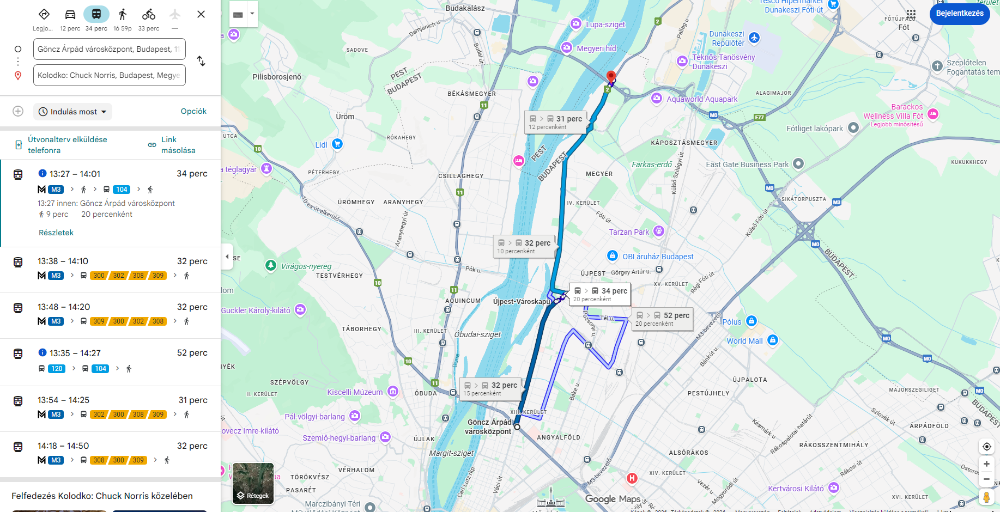

A Magyar Színház közelében található az első Kolodko-szobrok egyike:
👉 Ezek már a séta elején ráhangolnak a „rejtett szobrok” keresésére, érdemes lassan haladni és figyelni a járdaszegélyeket, oszlopokat.
Útközben, kisebb utcák mentén:
Ez egy igazi „meglepetés-szobor”, könnyű elsétálni mellette, ezért itt jó kicsit lelassítani.
A már említett nevezetességek mellett (Országház, II. Rákóczi Ferenc szobra) itt található:
Ez az egyik legismertebb Kolodko-alkotás, sokan direkt ezért jönnek ide. Jó kontrasztot ad a tér monumentális hangulatához.
Mielőtt lemennétek a Margitszigetre:
👉 Ezek a híd környékén, alacsonyan helyezkednek el – klasszikus Kolodko-stílus, érdemes körbenézni a korlátoknál.
A Margitszigeten nem
hanem a klasszikus látnivalók következnek (ahogy korábban):
Aztán elgyalogolunk Göncz Árpád Városközpont metróállomáshoz -> onnan M3 Metróval Újpest Városkapu és max. 10p várakozással a 104 busszal elmegyünk Ezred utca megállóig, -> onnan felmegyünk a Megyeri Hídra, ahol láthatjuk a
és a Duna folyót.
